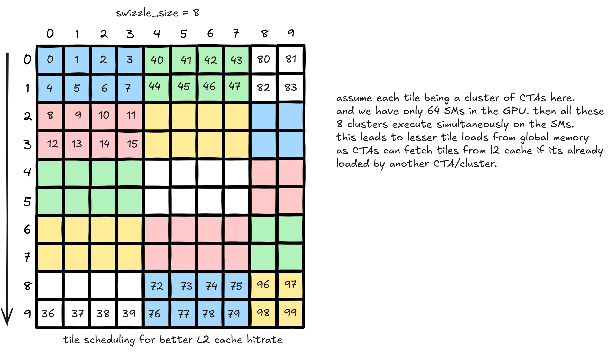
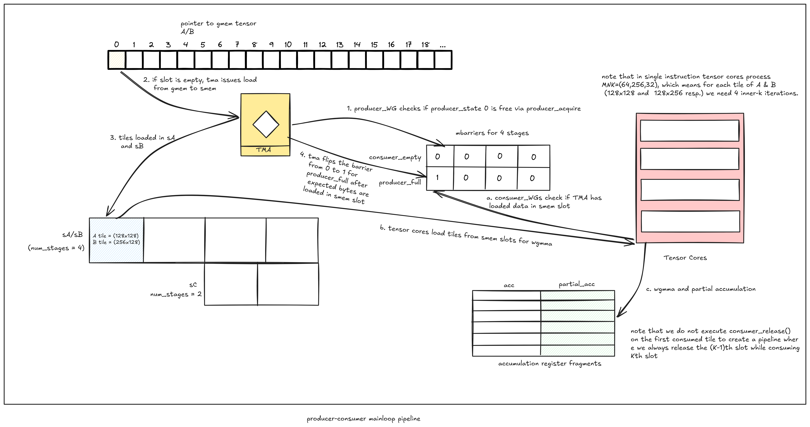
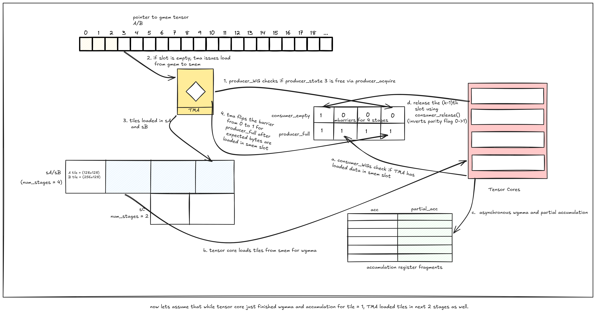
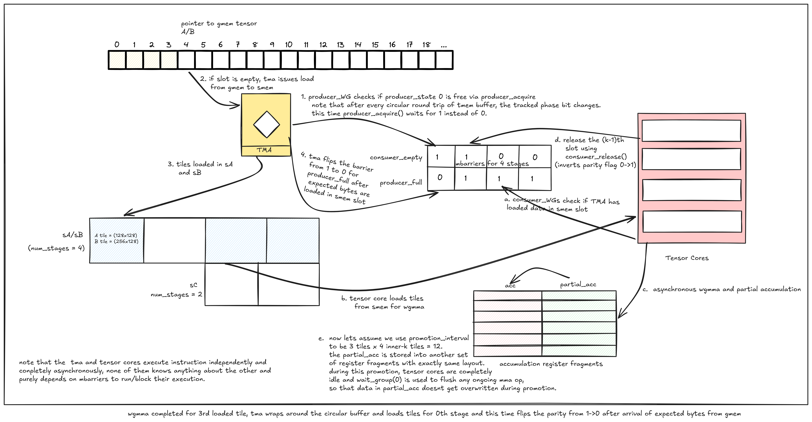
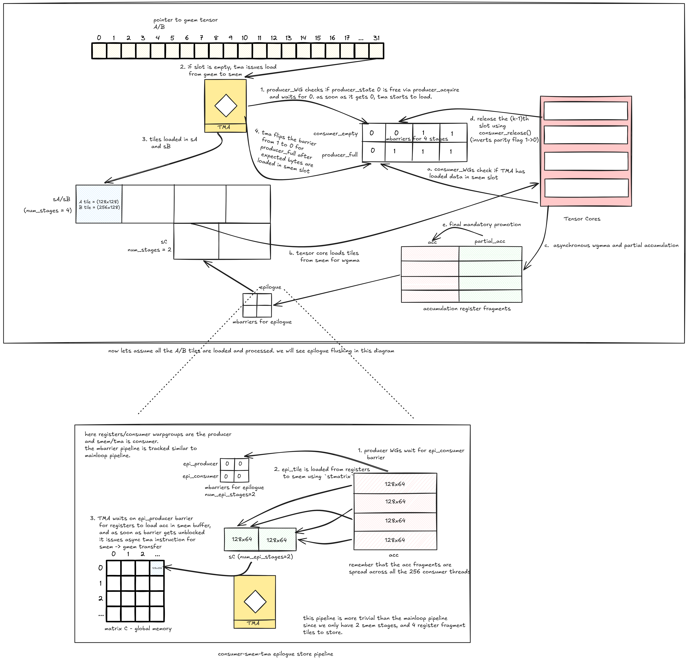

Introduction
In this blog, I explore the Hopper (sm90) architecture and CuTe tensor algebra with CuTeDSL (a Python-based DSL), implement an FP8 GEMM kernel, and beat cuBLAS on the fast accumulation path.
The CuTeDSL kernel beats cuBLAS at fast accumulation by ~30-40 TFLOPS on 4096³ matrix shapes, while reaching 95% of cuBLAS on slow accumulation (not exact bit parity).
FP8 GEMM has two versions — slow accumulation and fast accumulation — both having their own benefits and tradeoffs. As a result, both are first-class citizens of cuBLAS and are exposed with the fast_accum flag in torch._scaled_mm and CUBLASLT_MATMUL_DESC_FAST_ACCUM in cuBLASLt. The difference between the two is numerical accuracy retention. Intermediate FP8 matrix multiply results are accumulated directly inside the tensor core's internal accumulation registers (often referred to as FP22 precision) throughout the entire inner-loop reduction (K dimension). Accumulating hundreds of matmul outputs in FP22 registers can lead to precision loss. To prevent this and retain numerical accuracy, we need to periodically flush/promote the accumulation into FP32 registers. This results in a tradeoff between numerical accuracy and computation speed, with both having their own downstream use cases.
- Hopper (sm90)new features over Ampere
- CuTe / CuTeDSLlayouts, tensors, atoms, tiling
- Backgroundwhy CuTe, and the setup
- Kernelfull walkthrough
- Resultsbenchmarks vs cuBLAS
- Conclusiontakeaways and open questions
Hopper (sm90) — new features over Ampere (sm80)
- FP8 support: Hopper introduced native FP8 tensor core support, effectively doubling throughput with half the memory over Ampere's fp16 limitation.
- WGMMA: Until Ampere, mma instructions were executed at warp level (32 threads). Hopper introduces
wgmmainstructions that are executed at warpgroup level (128 threads / 4 warps), utilising all 4 tensor cores present in an SM. Moreover,wgmmais an asynchronous instruction compared to its prior counterparts. This means that as soon as thewgmmainstruction is executed, threads don't stall at the same point and can instead move forward. Tensor core operations are tracked purely by hardware-based instructions. - Tensor Memory Accelerator (TMA): For loading data from GMEM to SMEM, Hopper provides a dedicated hardware unit — TMA — which loads up to 5D tensors using a tensor map. Moreover, only a single thread needs to execute the
cp.async.bulk.tensorinstruction instead of all 32 threads in the warp. Shared memory swizzling also gets native support directly with TMA. - DSMEM and thread block clusters: Before Hopper, thread blocks (CTAs) were executed completely independently of each other. There was no way to share data among different CTAs. Hopper solves this by introducing thread block clusters, where multiple CTAs are bound into a cluster, which means all CTAs in a cluster are guaranteed to execute simultaneously across SMs that are close to each other. Distributed Shared Memory (DSMEM) further enhances this design by allowing CTAs to write data into each other's SMEM directly. This allows a single CTA to load common data and share it with all CTAs in the cluster. This effectively makes CUDA's execution hierarchy "Grid → Cluster → CTA → warp → thread".
- MBarriers: To manage the asynchronous execution model and hardware-based execution, Hopper provides m-barriers, which are 64-bit integers stored in SMEM and use a counter-based parity system to stall and allow execution.
CuTe / CuTeDSL
CUDA Tensors, or CuTe, is in a nutshell a mathematical model of CUDA kernels. It is primarily based on expressing tensors as mathematical layouts, and operations over those tensors as altering/transforming their layouts. While CuTe may feel unintuitive for programming GPU kernels at first, once you wrap your head around the layouts it reduces complex kernels to wiring mathematical functions together while handling the memory.
An analogy for a CuTe kernel is thinking of it as a puzzle grid, where we need to fit all the layouts, tensors and atoms such that they are compatible with each other for the kernel to compile, run, and produce numerically correct output. So what we'll be doing is walking through each layout, tensor and atom that we've used in the final kernel, before putting every piece together.
I found CuTe balancing itself on these 4 pillars — layouts, tensors, atoms, and tiling:
- Layouts: A layout in CuTe is a functional mapping that translates a multidimensional logical coordinate — like a 2D matrix index (m, n) or a 3D tensor index (m, n, l) — into a single 1D physical memory offset. Mathematically, a layout is just a tuple of shape and strides.
Layout = (Shape, Strides)
- Tensors: These are nothing but a layout with a pointer pointing to the actual strip of data in memory that the layout is supposed to express.
- Atoms: In CuTe, an atom is the smallest indivisible unit of hardware execution — a direct C++ wrapper around a specific GPU hardware instruction (like a low-level PTX instruction) and its required execution layout. While layouts handle address mapping and tensors hold data, atoms define how the hardware actually acts on that data.
- Tiling: As the term expresses itself, modern kernel programming is all about executing instructions on tiles/pieces of a tensor. CuTe allows you to create/map layouts, tensors and atoms in a tiled manner while abstracting away the underlying pointer math.
Background
A few questions that intrigued me were why we need CuTe, and how its mathematical modelling fits into GPU kernels. I found the answers in this talk on the GPU Mode channel by Cris Cecka (CuTe's inventor). I'd highly recommend it if you want intuition around CuTe — and on top of that, Cris is a brilliant storyteller!
I, from my side, will try to explain it as well as I can as I walk through the kernel.
I'll be writing the kernels using CuTeDSL, which is a Python-based DSL by CUTLASS. It's mirror-identical to CuTe C++ and compiles down to the same SASS binary, while being easier to write in Python's syntax and faster to iterate on thanks to MLIR-based compilation.
To experience the capability of Hopper at its fullest, we'll be writing an FP8 (E4M3) GEMM kernel, since Hopper supports native FP8 matmuls:
C = A @ BT
where A = (M×K), B = (N×K), C = (M×N), all three being row-major.
To benchmark our kernel we'll be using cuBLASLt, which is a lightweight, low-level version of cuBLAS that provides more control to find the best kernel for our problem.
All H100 benchmarks were executed via Modal. Because Modal runs inside containerized environments without root access, we cannot lock GPU clock frequencies to eliminate thermal throttling or power-state fluctuations. As a result, performance metrics may vary by ~10 TFLOPS across different runs, so please take the absolute numbers with a slight grain of salt.
This kernel development is based on an example from the CUTLASS repository, which acts as the baseline. I'll only be detailing the final kernel that beat cuBLASLt, while explaining CuTe in detail. This alone makes this blog long enough, and is the reason I'm not mapping out every kernel written during the iteration. That said, I'll mention how each new feature we add results in performance gains, while also stating the ones I stashed due to regression.
Kernel
We'll be looking at the 4096³ problem shape for this writeup.
self.tiled_mma = sm90_utils.make_trivial_tiled_mma(
a_dtype=self.a_dtype,
b_dtype=self.b_dtype,
a_leading_mode=self.a_layout.sm90_mma_major_mode(),
b_leading_mode=self.b_layout.sm90_mma_major_mode(),
acc_dtype=self.acc_dtype,
atom_layout_mnk=self.mma_layout_mnk,
tiler_mn=(64, self.tile_shape_mn[1])
)tiled_mma is a TiledMMA object that takes a single mma atom and replicates/tiles it across the scope of our problem. In our case, we used make_trivial_mma to find the most compatible mma atom for our problem. It considers dtypes and major modes (row-major or column-major) of the input and output tensors/matrices. For FP8 matmul, CuTeDSL requires both A and B matrices to be K-major. atom_layout_mnk is used to replicate the wgmma instruction across multiple warpgroups; in our case we use 2 warpgroups per CTA across the m dimension. tiler_mn decides the shape of the wgmma instruction being used. For FP8 matmul, the wgmma instruction requires m=64 and k=32 fixed. We can select the n dimension among (16, 32, …, 256); we select n=256 for our problem.
The input tiles we need to load for a single wgmma instruction are A's tile = (64, 32) and B's tile = (256, 32). The inner k dimension being 32 is very small, so we can load multiple inner-K tiles at once in a single TMA load instruction (we then iterate through the inner-k dimension in the kernel), and since we're using 2 warpgroups per CTA we need to replicate the tile across the m dimension too. Therefore, the input tiles we load from global memory to shared memory are A's tile = (64+64, 32×4) and B's tile = (256, 32×4). Our tile_shape_mnk turns out to be (128, 256, 128).
To load the tiles of the A and B matrices, we need to allocate memory in SMEM (shared memory), and for that we need to create the required layouts:
@staticmethod
def _make_smem_layouts(
tile_shape_mnk: tuple[int, int, int],
epi_tile: tuple[int, int],
a_layout: utils.LayoutEnum,
a_dtype: type[cutlass.Numeric],
b_layout: utils.LayoutEnum,
b_dtype: type[cutlass.Numeric],
c_layout: utils.LayoutEnum,
c_dtype: type[cutlass.Numeric],
num_stages: int,
epi_num_stages: int
):
a_smem_shape = cute.slice_(tile_shape_mnk, (None, 0, None)) # (m,k)
a_is_k_major = (
a_layout.sm90_mma_major_mode() == cute.nvgpu.OperandMajorMode.K
) # True
a_major_mode_size = tile_shape_mnk[2 if a_is_k_major else 0] # 2
a_smem_layout_atom = cute.nvgpu.warpgroup.make_smem_layout_atom(
sm90_utils.get_smem_layout_atom(
a_layout,
a_dtype,
a_major_mode_size,
),
a_dtype,
)
a_smem_layout_staged = cute.tile_to_shape(
a_smem_layout_atom,
cute.append(a_smem_shape, num_stages),
order=(1, 0, 2) if a_is_k_major else (0, 1, 2),
)
...
return a_smem_layout_staged, b_smem_layout_staged, epi_smem_layout_stagedget_smem_layout finds the most suitable swizzling layout for our tiles based on the tile's layout, the dtype of the tensor, and the major mode. Swizzling is handled directly by the hardware and atom interaction. Finally, the single-tile SMEM layout is replicated for num_stages (buffer stages for hosting multiple tiles in SMEM). We repeat the same pattern for B's tiles and C/epilogue tiles (I'll explain this later below).
Now that we have the SMEM layouts ready, we need TMA instructions to load tiles of exactly compatible shapes from global memory to shared memory. And as I said, CuTe is a puzzle and we need to fit the pieces into their compatible slots. That's exactly what we need to do for loading data into SMEM. By creating SMEM layouts, we've now created slots in SMEM, and we want TMA load instructions to provide us with pieces of exactly the same compatible shapes. Therefore we need to create atoms for TMA loads as well:
@staticmethod
def _make_tma_atom_and_tensor(
gmem_tensor: cute.Tensor,
tensor_smem_layout: cute.ComposedLayout,
smem_tile: tuple[int, int],
mcast: int
):
tma_op = (
cute.nvgpu.cpasync.CopyBulkTensorTileG2SOp()
if mcast == 1
else cute.nvgpu.cpasync.CopyBulkTensorTileG2SMulticastOp()
)
smem_layout = cute.slice_(tensor_smem_layout, (None, None, 0))
tma_atom, tma_tensor = cute.nvgpu.cpasync.make_tiled_tma_atom(
tma_op,
gmem_tensor,
smem_layout,
smem_tile,
mcast
)
return tma_atom, tma_tensorThis function takes the pointer to the tensor in GMEM and the SMEM layout we just configured above, and returns the wrapper atom with the appropriate TMA instruction. The returned tma_tensor is a tensor transformed by CuTe's tiling operation (tiled_divide) using the smem_tile. The transformation is as follows:
GMEM tensor shape: (M, K); smem_tile shape: (TileM, TileK); tma_tensor shape: ((TileM, TileK), RestM, RestK)
Example: GMEM tensor shape: (4096, 4096); smem_tile shape: (128, 256); tma_tensor shape: ((128, 256), 32, 16)
We apply this function to both the A and B GMEM tensors and get the transformed tensors for TMA loads. We can now notice that TMA loads from GMEM to SMEM are all dependent on each other's layouts, atoms and tensors. This relation turns the TMA loads into a simple bounded tile-loading operation without any manual address math or guardrails.
The mcast argument here describes whether a CTA is alone in its cluster, or whether it needs to share data with other CTAs in the cluster.
@staticmethod
def _compute_grid(
d: cute.Tensor,
tile_shape_mnk: tuple[int, int, int],
cluster_shape_mn: tuple[int, int],
swizzle_size: int,
raster_along_m: bool,
max_active_clusters: cutlass.Constexpr,
) -> tuple[int, int, int]:
"""Compute grid shape for the output tensor D."""
c_shape = cute.slice_(tile_shape_mnk, (None, None, 0))
gd = cute.zipped_divide(d, tiler=c_shape)
num_ctas_mn = gd[(0, (None, None))].shape
cluster_shape_mnl = (*cluster_shape_mn, 1)
tile_sched_params = utils.PersistentTileSchedulerParams(
(*num_ctas_mn, 1),
cluster_shape_mnl,
swizzle_size,
raster_along_m,
)
grid = utils.StaticPersistentTileScheduler.get_grid_shape(
tile_sched_params, max_active_clusters
)
return tile_sched_params, grid
Next up, we compute our kernel launch configuration based on our output tile size (tile_m, tile_n) and cluster shape. We use PersistentTileScheduler, which allows us to launch only as many CTAs as there are total SMs in the GPU, with each CTA then processing multiple output tiles allocated to it. This reduces idle SM state when the number of output tiles isn't an exact multiple of the number of SMs, which could otherwise result in idle SMs during the last wave of CTAs. swizzle_size and raster_along_m decide the tile scheduling strategy for maximising L2 cache hits when loading common tiles among different CTAs.
Next we have the @cute.jit decorator, which is used to declare the host-side function that compiles and launches the kernel with the atoms, layouts and grid computed above. We declare the shared memory structure and allocate memory in this function as:
@cute.struct
class SharedStorage:
sA: cute.struct.Align[
cute.struct.MemRange[
self.a_dtype,
cute.cosize(self.a_smem_layout_staged)
],
self.buffer_align_bytes
]
# similar struct for B and C smem layouts
mainloop_pipeline_array_ptr: cute.struct.MemRange[
cutlass.Int64, self.num_stages * 2
] # mbarrier for tma-mma multi buffered pipeline
epi_pipeline_array_ptr: cute.struct.MemRange[
cutlass.Int64, self.epi_num_stages * 2
] # mbarrier for epilogue storeNow that we've figured out the machinery around our kernel, it's time to jump directly into the kernel itself. In CuTeDSL the kernel function is tagged with the @cute.kernel decorator. This is the piece of code that gets compiled down to SASS and executed on the GPU.
Our kernel is going to have 3 warpgroups: 2 for wgmma (termed consumers) and 1 for handling loads and stores of data to and from SMEM (known as the producer). Note that for TMA loads and stores we only require a single thread issuing the TMA instruction, but to manage the address math and barriers we need extra registers. Therefore we allocate a complete warp (32 threads) for GMEM → SMEM TMA loads, and another warp for SMEM → GMEM epilogue stores, with both warps being part of the producer warpgroup. These two are the only active warps in the producer warpgroup; note that the other two inactive warps do not consume any resources and stay idle.
The idea is simple — the producer warp loads matrix tiles into SMEM buffers, and the consumer warpgroups crunch through these tiles while accumulating the intermediate results in their registers. At the end of the tile, the consumer warpgroups flush the accumulation from registers into an SMEM buffer (the one we allocated earlier using epi_smem_layout_staged), then the epilogue warp issues a TMA instruction to store the accumulations back to GMEM.
To manage this pipeline we need synchronization points where each part of the hardware knows when to proceed and when to wait for others to complete. That's where the mbarrier comes into play. It's a 64-bit integer that resides in SMEM. It acts as an asynchronous parity flag that can track arrival bytes, and threads can flip its parity flag as soon as it receives the allotted number. Both threads and hardware units like TMA can query it to decide whether to proceed or block execution.
For this kernel we need to manage two mbarrier-based pipelines — one for the TMA-mma loop, and another for the epilogue's register → SMEM → GMEM stores.




To load tiles from GMEM to SMEM we need to transform our initial tensors into compatible layouts:
a_cluster_layout = cute.make_layout(self.cluster_shape_mn[1])
a_cta_crd = cluster_coord_mn[1]
tAsA, tAgA = cute.nvgpu.cpasync.tma_partition(
tma_atom_a, # the tma instruciton
a_cta_crd, # coord in cluster across the row
a_cluster_layout, # cluster layout across the row
cute.group_modes(sA, 0, 2), # groups the layout as (tile, num_stages)
cute.group_modes(gA_mk, 0, 2) # groups the layout as (tile, restM, restK)
)Now we can access the GMEM tensor for TMA loads for output tile (m, …) using tAgA[(None, m, None)], and similarly the SMEM buffer can be accessed using tAsA[(None, stage)]. Notice how the tensors are transformed into purely accessing correct tile coordinates. We replicate the same for the gB tensor.
Now, in Hopper, tensor cores can load data for wgmma directly from shared memory, but the accumulation is done in thread-private registers just like in previous architectures. To allocate registers, we use the tiled_mma object to map out the exact fragment of the mma that each participating thread's registers require:
mma_wg_thread_layout = cute.make_layout(
self.num_wg_mma, stride= self.threads_per_wg
)
thr_mma = tiled_mma.get_slice(
mma_wg_thread_layout(wg_idx - self.num_wg_dma)
)
tCsA = thr_mma.partition_A(sA)
tCsB = thr_mma.partition_B(sB)
tCrA = tiled_mma.make_fragment_A(tCsA) # doesnt allocate physical registers
tCrB = tiled_mma.make_fragment_B(tCsB) # doesnt allocate physical registers
tCgC = thr_mma.partition_C(gC_mn)
acc_shape = tCgC.shape[:3]
partial_acc = cute.make_rmem_tensor(acc_shape, self.acc_dtype) # allocates registers for partial_accum
acc = cute.make_rmem_tensor(acc_shape, self.acc_dtype) # allocates registers for accumulationNote that for tCrA and tCrB no physical registers are allocated for the fragments, as tensor cores fetch tiles from SMEM directly. These variables only exist at compile time, and CuTe passes the SMEM pointer address during cute.gemm directly.
Hopper also allows us to explicitly increase/decrease registers per warpgroup. This allows us to save registers on the producer warpgroup, since it doesn't need to hold any data in registers and requires fewer registers for managing TMA loads. On the other hand, consumer warps require registers for double accumulation. Hence we set dma_registers=24 and mma_registers=240.
Producer group
The producer warp has a single job: load tiles from GMEM to SMEM as soon as the corresponding barrier's parity on the SMEM buffer is flipped. The TMA engine can implicitly signal the barrier to the consumer as soon as the expected bytes arrive. Using CuTe, we only have to iterate over the number of tiles to load and slice the expected tile using the tAgA and tBgB tensors. Corresponding SMEM buffers are accessed by slicing the tAsA and tBsB tensors. We use producer_acquire() to wait on SMEM barriers, to make sure the previous tile isn't still being read by tensor cores and that we don't overwrite it in between.
Consumer warpgroups
The 2 consumer warpgroups execute the wgmma instruction between the A and B tiles. We use consumer_acquire() to wait for the producer to load a tile into the next SMEM buffer. Once the mbarrier's parity flips, we can use the SMEM buffers to load tiles into tensor cores. We use an inner loop and execute 64x256x32 wgmma on the inner-K dimension, storing the accumulation in the register fragments partial_acc.
In fast_accum=False mode, we need to flush partial_acc into acc at fixed intervals to account for numerical precision retention. This phase stalls tensor cores completely, as we can't do wgmma and accumulation promotion at the same time: we have a single partial_acc fragment, and an ongoing wgmma can overwrite partial_acc while we're still flushing its data to acc, which corrupts the data. This is an inevitable tradeoff we have to pay between speed and precision.
After processing all the tiles required for output tile (m, n), we flush the register fragments into SMEM for storing back to global memory. This is done by the stmatrix instruction. It's a complete mirror of ldmatrix, and the CuTe atom and layout execute the store in the most optimised manner.
copy_atom_r2s = sm90_utils.sm90_get_smem_store_op(
self.c_layout,
elem_ty_d=self.c_dtype,
elem_ty_acc=self.acc_dtype,
)
copy_atom_C = cute.make_copy_atom(
cute.nvgpu.warp.StMatrix8x8x16bOp(
self.c_layout.is_m_major_c(),
4,
),
self.c_dtype
)
tiled_copy_C_Atom = cute.make_tiled_copy_C_atom(copy_atom_C, tiled_mma)
tiled_copy_r2s = cute.make_tiled_copy_S(
copy_atom_r2s, # stmatrix
tiled_copy_C_Atom,
)Epilogue warp
After fragments of the accumulation are loaded from registers to shared memory, we need to flush them to global memory as a single tile, and make room for the next tile of fragments. Just like the producer-consumer pipeline, we use the consumer-epilogue pipeline to orchestrate the stores to GMEM.
gC_mn_slice = gC_mn[(None, None, m, n)] # coords of output tile
tCgC_for_tma_partition = cute.zipped_divide(gC_mn_slice, self.epi_tile)
bSG_sC, bSG_gC = cute.nvgpu.cpasync.tma_partition(
tma_atom_c,
0,
cute.make_layout(1), # single CTA in cluster
cute.group_modes(sC, 0, 2), # (frag_tile, num_epi_stages)
tCgC_for_tma_partition # (epi_tile, restM, restN)
)Here tma_partition is used to transform the global tensor and the SMEM tensor to make them compatible for epilogue stores using tma_atom_c. bSG_sC and bSG_gC can simply be accessed with indices of the SMEM buffer and epi_tile coordinate for TMA stores.
Note that due to persistent scheduling, a single SM processes multiple output tiles, which means the same barriers and buffers are reused — saving the time of recreating them again and again whenever a new CTA is launched on the SM. For this, we need to flush our barriers as well after the end of a work tile.
Results
fast_accum = True
| Problem shape | cuBLAS (TFLOPs) | cuBLAS time (us) | Kernel (TFLOPS) | Kernel time (us) | Numerical error |
|---|---|---|---|---|---|
| 4096³ | ~1540 | 89.144 | ~1570 | 87.283 | 1.56250e-02 |
| 8192³ | 1663 | 660.915 | 1681 | 654.007 | 3.51562e-02 |
| 16384³ | 1689 | 5206.316 | 1726 | 5093.315 | 9.76562e-02 |
| 2048³ | 1140 | 15.056 | 1071 | 16.037 | 5.85938e-03 |
| 4096×4096×5120 | 1588 | 108.141 | 1607 | 106.905 | 1.95312e-02 |
| 4096×4096×11008 | 1643 | 224.767 | 1679 | 219.908 | 4.68750e-02 |
| 4096×4096×14336 | 1638 | 293.671 | 1685 | 285.329 | 6.25000e-02 |
| 16384×4096×4096 | 1657 | 331.593 | 1648 | 333.472 | 1.75781e-02 |
| 4096×3072×4096 | 1525 | 67.583 | 945 | 108.984 | 1.75781e-02 |
fast_accum = False
cuBLAS baseline: 1410 TFLOPS, 98.194 µs.
| Promotion interval | Kernel (TFLOPs) | Kernel time (us) | Numerical error |
|---|---|---|---|
| 128 | 1417 | 96.943 | 1.75781e-02 |
| 64 | 1350 | 101.788 | 8.05664e-03 |
| 32 | 1242 | 110.653 | 3.90625e-03 |
Comments
For slower accumulation, it remains a mystery to me what promotion_interval cuBLAS uses internally, and whether there's a way to optimise or interleave the accumulation part alongside the mma itself or some other ops to reduce tensor core stalls.
Another thing that creates parity issues in numerical accuracy is that floating point addition isn't associative, i.e. (a+b)+c != a+(b+c). This means cuBLAS using a different tiling order, tile sizes, etc. can result in different rounding errors between cuBLAS and our kernel.
Lastly, one optimisation to squeeze out the last remaining TFLOPS that I haven't tried yet, and which has proven to boost performance on larger problem shapes, is Hilbert curves for tile scheduling and better L2 cache hit rate. Pranjal's blog explains it quite nicely and shows the results in numbers.
Conclusion
This blog post explores CuTeDSL and the Hopper architecture with a walkthrough of a SOTA FP8 GEMM kernel. We beat cuBLAS on dense shapes consistently in fast accumulation mode. cuBLAS heuristics on slow accumulation remain a mystery to me, as I've used all the tools in my inventory to reason about it. I'm curious about anything I missed in this post, and would like to know and learn more. Fellow readers who pave this slow accumulation path are requested to let me know about it too.
- Cris Cecka’s Talk on GPU Mode YouTube Channel (https://www.youtube.com/watch?v=vzUhbDO_0qk)
- Official CUTLASS repository (https://github.com/NVIDIA/cutlass)
- Simon Veitner’s CuTeDSL series (https://veitner.bearblog.dev/blog/)
- Thien Tran’s CuteDSL kernels (https://github.com/gau-nernst/gn-kernels/tree/main/gn_kernels/cutedsl)
- Colfax’s tile grid scheduling (https://research.colfax-intl.com/cutlass-tutorial-persistent-kernels-and-stream-k/)
- Pranjal’s FP16 GEMM blog (https://cudaforfun.substack.com/p/outperforming-cublas-on-h100-a-worklog)